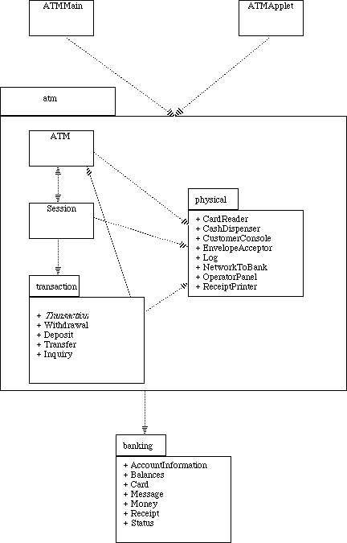

The package diagram shows how the various classes are grouped into packages. There are two "top-level" classes - ATMMain and ATMApplet - which allow the system to be run (respectively) as an application or as an Applet. (Only one of the two would be instantiated in any particular use of the system.)
Each of these classes, in turn, depends on the package atm which contains the class ATM that represents the system as a whole, and the class Session that represents one session. ATM depends on Session, and vice versa - since the ATM creates Sessions, and each Session, in turn, uses the ATM to interact with the customer.
The subpackage transaction contains the classes used to represent individual transactions that a customer initiates. The class Session depends on the transaction package because it creates individual transaction objects. These, in turn, again depend on the ATM to interact with the customer.
The subpackage physical contains the classes that represent the various physical components of the ATM. For the purposes of this simulation, these are simulated by a GUI. A real ATM would have quite different classes in this package - classes that actually control its physical components. The class ATM makes use of these components, and Session and the various kinds of transaction gain access to them through ATM to actually perform the needed operations.
Finally, the package banking contains classes that represent the banking enterprise itself and the information communicated back and forth between the ATM and the bank - i.e. classes which might be the same in a totally different implementation of an ATM that interacts with the same bank.
This is, of course, a simulation. However, most of the code that is specific to the simulation resides in the package physical, plus the two top-level classes. Presumably, the other classes and packages might be similar in a real system.

Page of links for non frames-enabled browsers.